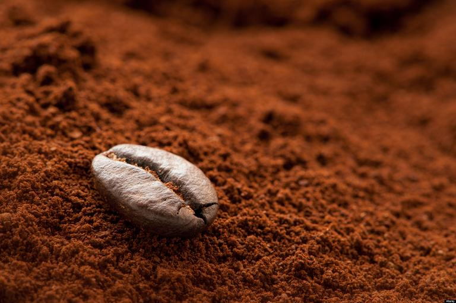
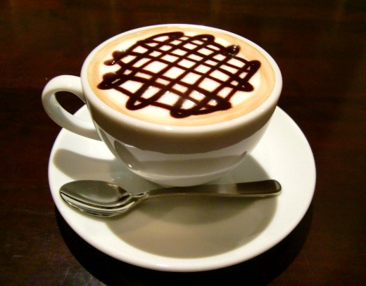
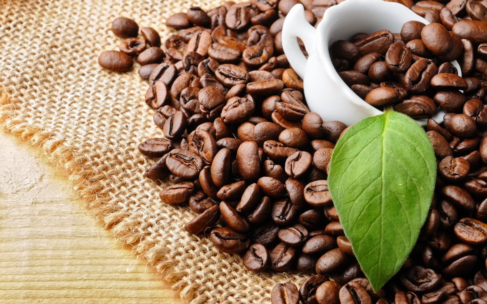

Cà Phê Việt - Đẳng cấp Việt
Cafe sạch nguyên chất là cafe được chế biến từ nguyên liệu 100% hạt cà phê. Cà phê nguyên chất KHÔNG PHA TRỘN các loại tạp chất như: đậu rang, bắp rang, cơm cháy rang hay các phụ phẩm khác…Hạt cà mộc hoặc có thể được tẩm rượu, bơ và được ủ trong môi trường nhiệt độ nhất định để tạo ra phong vị đậm đà riêng biệt. Bằng công nghệ chế biến sạch, hạt Cà Phê Nguyên Chất không có yếu tố gây hại cho sức khỏe và không sử dụng các loại hóa chất để tạo ra: độ đậm đặc, độ sánh dẽo, độ béo, màu cánh dán, nhiều bọt và mùi thơm dễ chịu.

Cafe Moka – Cầu Đất
Đà Lạt là loại cafe chất lượng cao; ở độ cao trên 1.500m, có nhiều vùng đồi dốc thoải cùng khí hậu mát mẻ với nền đất đỏ bazan, Cầu Đất - Đà Lạt là vùng đắc địa, lý tưởng nhất cho giống cà phê Mocha phát triển và sản sinh ra hạt cà phê có chất lượng được đánh giá ngon nhất nhì thế giới. Cà phê Cầu Đất - Đà Lạt được xem là “Bà hoàng” của các loại cà phê nhờ hương thơm quyến rũ đặc biệt của nó.”.

Cafe Culi & Robusta danh tiếng vùng đất Tây Nguyên
Khi nói đến cây cà phê Việt Nam phải kể đến những vùng nguyên liệu tại Tây Nguyên như Đắk Mil (Đắk Nông), Đắk Hà (Kon Tum), Chư Sê (Gia Lai) … và đặc biệt là Buôn Ma Thuột – Đắk Lăk ,“vựa” cà phê Robusta xuất khẩu đứng đầu thế giới.

Với đặc điểm thổ nhưỡng chủ yếu là đất đỏ bazan, ở độ cao khoảng 500m – 600m so với mặt biển cùng khí hậu mát mẻ mưa nhiều, Tây Nguyên rất phù hợp với cây cà phê Robusta và qua giai đoạn phát triển trăm năm, cà phê Robusta ở đây đã trở nên danh tiếng. Tính chất chung của cà phê Tây Nguyên là có hàm lượng caffein mạnh, vị đậm, và ít chua song mỗi vùng đất lại mang đến mỗi vị khác nhau.